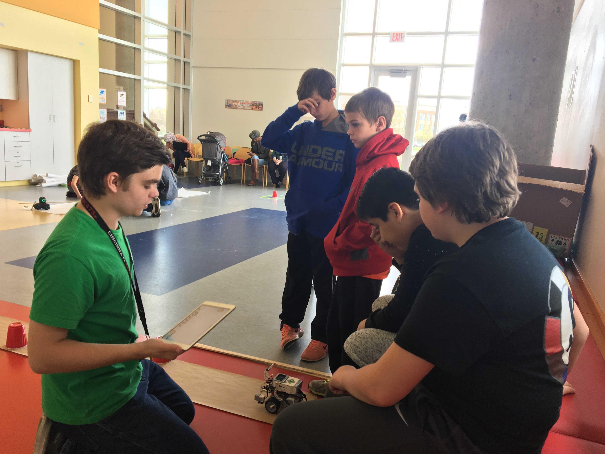
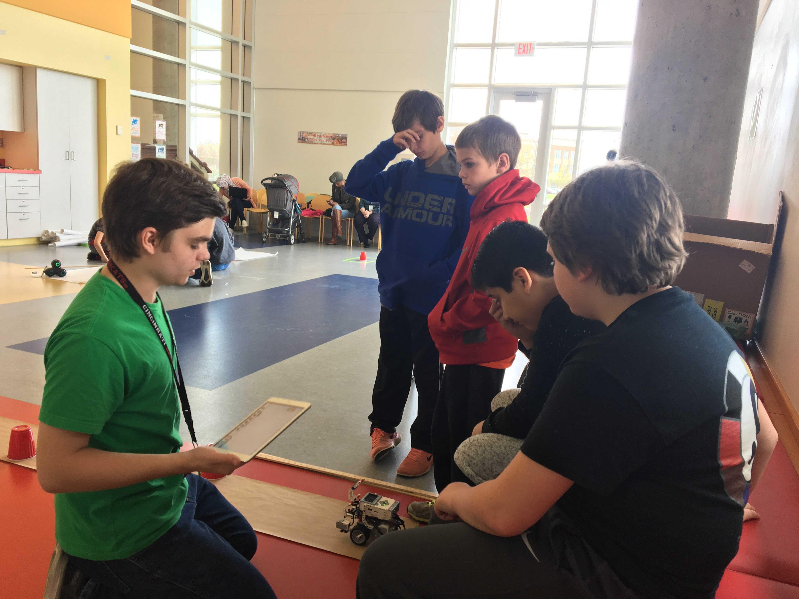

hi, i'm megan cui (ts - way).
here's some info about me + my portfolio.
i'm a rising senior at mason high school. more importantly, however:
1. i do debate.
- 2018 state qualifier & double-octafinalist in public forum debate (seeded #12 in prelims)
- 2018 national qualifier in world schools debate
- dabbled in congressional debate
2. i like to code.
- mason hack club co-founder & executive director
- cincyhacks lead event director
- techolympics 2018 tier1 performance web design - first prize
- 2018 ncwit ohio award winner
- fall 2016 "best high school hack" @ revolutionUC
- spring 2017 third place overall @ revolutionUC
- hosted fun volunteering events @ midpointe west chester, mason intermediate school, and western row elementary school
here are some pictures!


 

3. i play music.
- 2018 all-state orchestra principal flute + piccolo
- 2017 all-state band third chair flute
- mason hs wind symphony principal flute
- cincinnati symphony youth orchestra co-principal flute
- 2018 central ohio flute association senior division finalist
- 2018 cincinnati youth chinese music festival - first prize in instrumental
4. diversity is key.
i play a folk chinese instrument called "hulusi" around the cincinnati area.
- greater cincinnati chinese music society youth board member
- 2018 "east meets west" concert mc @ cincinnati art museum
- ge "connect kids to the world" volunteer
- teach teachers/students @ two cincinnati middle schools how to play "hulusi"
5. i write with passion.
i am passionate about the future of the youth, technology, mental health, cultural diversity, political change, and passion itself. i always love a good discussion -- please reach out to me over any medium to have one.
my ever-growing portfolio
media appearances:
- "24-hour hackathon promotes practice in coding, computer programming" - 10/20/17 mason hs chronicle
- "hack club host their first computer programming summer camp" - 6/30/17 mason hs chronicle
- "‘mental health awareness team’ directs effort for policy change" - 3/19/18 mason hs chronicle
- "mason hack club places 3rd in hackathon" - 4/12/17 mason activities student news
speaking:
- "a measure of success" - techolympics 2018 tedxpitch winner
- "12k in 4 days: how to pull off big events" - techolympics 2018 breakout presenter
- "east meets west" 2018 concert mc @ cincinnati art museum
- "destroy the stigma" // #forwhatistand campaign
- 2017 interalliance it careers camp start-up competition & presentation - first prize
performing:
- under construction!
writing:
- "if i weren't afraid" - medium
- "when reacting isn't enough" - medium
also, i love making new friends.
you can find me on a variety of social media platforms. by the way, i love meaningful discussions just as much as i love pictures of cute cats.